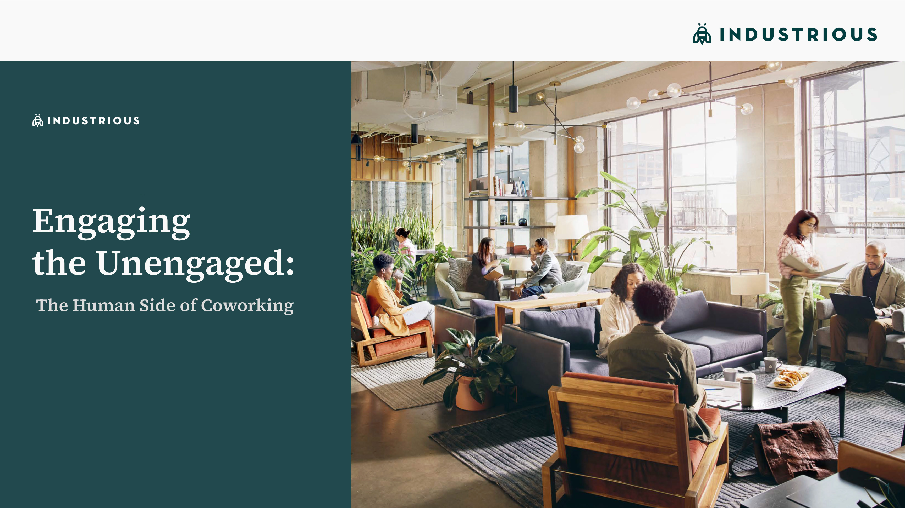

Engaging the Unengaged
Problem
Industrious puts flexibility, community, and wellness at the center of its coworking spaces — but even in a space built around people, some members still struggle to engage. The "unengaged" aren't disinterested — they're members whose needs don't match how the workspace is set up. Some feel pressured to always be "on," others see events as forced networking, and many would rather just stay home where they have more control over their day.
"If an event is just for networking — no real theme — I feel uncomfortable."— Sally, Research Participant
Role + Methods
This was a team research project focused on understanding the coworking experience — what draws people in, what pushes them away, and what it would take to turn disengaged members into loyal participants.
Research included:
- Desk research and SWOT analysis of the coworking landscape
- A site visit to observe how members use the space
- Intercept interviews with members on-site
- In-depth interviews with eight people with coworking experience
- A stakeholder interview for the organizational perspective
Research & Insights
One main theme emerged across our research: members are constantly balancing focused work with personal time. They come to coworking spaces to get work done, but they also need the freedom to step away and recharge.
Think of it like a battery — it keeps working, but without recharging, it burns out. Our findings broke into three areas: feeling human at work, autonomy through the workday, and building community beyond surface-level networking.

Feeling human, not like a machine
Professional connections matter in a work context, but what actually draws people to the workplace are genuine human interactions — checking in on someone, having a casual chat. These moments provide more emotional support than surface-level networking ever could.
And while members come in for "office mode," that doesn't mean they want to be on all the time. When people are given the opportunity to pause, they feel more comfortable and less stressed.
"When I'm at my best, I'm not faking productivity — I'm actually being productive. Having that space to breathe means productivity."— Alyssa, Research Participant
Autonomy through the workday
Everyone's energy, focus, and sensory needs are different. When people can adjust their environment and structure their own day, the quality of work improves. But when the space forces a one-size-fits-all way of working, they disengage — or just stay home.
People naturally move between wanting quiet focus and seeking social energy, but most coworking spaces don't give them a clear way to signal which mode they're in.
"Sometimes you just need that quiet space to work… it's about balancing those moments and not being interrupted when you're in the zone."— Alyssa, Research Participant
Community beyond networking
Members felt the strongest sense of belonging when they shared a purpose — not just a floor plan. When people believe in what they're building and can see its impact, real community forms.
Traditional networking events are common in coworking spaces, but the unengaged often associate them with negative connotations. What people responded to instead were effortless, everyday interactions — and those casual connections often lasted longer.
"Many events felt promotional, but hands-on community events were most valuable to me."— Isaac, Research Participant
Insight 1
People don't need more events — they need permission to be human
Members aren't disengaged because there's not enough programming. They're disengaged because the space doesn't always acknowledge that people need to recharge, connect on their own terms, and feel seen as more than just workers.
When people feel they must be productive all the time, they burn out. When they're given space to breathe, they come back.
"At my previous company, I felt more of a community. People shared a mission and vision, and that created a sense of belonging."— Sally, Research Participant
Insight 2
The best connections happen when no one is trying to network
Forced networking pushes the unengaged further away. But low-stakes, everyday interactions — a shared snack, a casual conversation, a collaborative moment — build community more effectively than any structured event.
The challenge for Industrious is creating the conditions for these moments to happen naturally, without adding pressure.
How can Industrious create a framework that helps staff build meaningful connections and turn members who struggle to engage into loyal participants?
Solution
Rather than adding more programming, we recommended a framework of small, intentional shifts across three areas — each mapped by cost and potential impact to help Industrious decide where to start.
Warm touchpoints, not just transactions
Simple internal guidelines for the team experience managers to deliver caring interactions — friendly greetings, regular check-ins, small gestures that make members feel seen. Inexpensive to implement, but high impact on connection.
Moments of discovery
Small surprises embedded into the space — notes, snacks in communal areas, low-stakes scavenger hunts that lead to unexpected encounters. These gentle prompts encourage people to pause, recharge, and connect with each other naturally.
Signals that respect focus
Simple cues like "Do Not Disturb" or "Free to Chat" give members control over when and how they interact — bringing the kind of boundary-setting they have at home into the shared workspace.
Events that start conversations
Collaborative activities like cooking sessions or plant workshops give people something to take back to their desks — and a reason to keep talking. Interactive prompts like rotating polls by the candy jar create playful, recurring moments of community.
Outcome + Takeaways
We presented our framework to the Industrious team with a recommendation to pilot a few ideas and see how members respond. Some can be implemented immediately; others need more planning.
The project reframed engagement as something that happens through daily experience — not scheduled events. Small environmental and programmatic shifts can make participation feel natural and sustainable.
"It's usually just small talk… but it adds to the positive effect on coming to the office."— Caleb, Research Participant
Engagement Happens Through Work
The strongest relationships formed through shared projects and everyday interactions, not formal networking. Designing for natural collaboration proved more effective than standalone programming.
Participation Needs to Feel Optional
Members engaged more when activities felt flexible and self-directed. Supporting autonomy — over schedules, spaces, and social interaction — made participation feel comfortable and authentic.